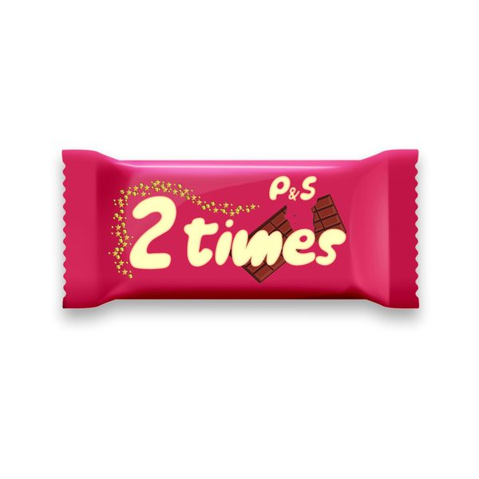

I 19 dischi
 1
Moonlight shadowJack Mazzoni,Nicola Fasano
1
Moonlight shadowJack Mazzoni,Nicola Fasano
 2
Love Again (feat. Alida)Alok & VIZE
2
Love Again (feat. Alida)Alok & VIZE
 3
Goin' DownRiccardo Rey & Stefano Pain
3
Goin' DownRiccardo Rey & Stefano Pain
 4
Jumpin'Westend, CID
4
Jumpin'Westend, CID
 5
Hot StepperBlock & Crown & Lissat
5
Hot StepperBlock & Crown & Lissat
 6
Talk To MeEarth n Days
6
Talk To MeEarth n Days
 7
Feel Something (Sammy Porter Remix)Armin van Buuren
7
Feel Something (Sammy Porter Remix)Armin van Buuren
 8
Shift PhazedMark Knight, Frederick & Kusse
8
Shift PhazedMark Knight, Frederick & Kusse
 9
Make Amends (feat. Kyan)Curbi & Tchami
9
Make Amends (feat. Kyan)Curbi & Tchami
 10
Let You DownDannic
10
Let You DownDannic
 11
Get liftLeandro Da Silva
11
Get liftLeandro Da Silva
 12
Dubplate ft Kriss KissWICKD & D-Steal
12
Dubplate ft Kriss KissWICKD & D-Steal
 13
We've got usEric Spike
13
We've got usEric Spike
 14
feelinFunkin Matt
14
feelinFunkin Matt
 15
Is It Really Love (Olympis Remix)Joe Stone vs. Cr3on
15
Is It Really Love (Olympis Remix)Joe Stone vs. Cr3on
 16
BittersweetMichael Calfan
16
BittersweetMichael Calfan
 17
Savoir FaireDamien N-Drix & Tony Romera
17
Savoir FaireDamien N-Drix & Tony Romera
 18
Into the unknowDon Diablo
18
Into the unknowDon Diablo

19 2 TimesP&SLa tracklist
- 1 Moonlight shadow Jack Mazzoni,Nicola Fasano One Seven Music
- 2 Love Again (feat. Alida) Alok & VIZE CONTROVERSIA
- 3 Goin' Down Riccardo Rey & Stefano Pain 1st Strike
- 4 Jumpin' Westend, CID Repopulate Mars
- 5 Hot Stepper Block & Crown & Lissat Beats for Sports
- 6 Talk To Me Earth n Days Armada Music
- 7 Feel Something (Sammy Porter Remix) Armin van Buuren Armada Music
- 8 Shift Phazed Mark Knight, Frederick & Kusse Toolroom Records
- 9 Make Amends (feat. Kyan) Curbi & Tchami Spinnin' Records
- 10 Let You Down Dannic Future House Music
- 11 Get lift Leandro Da Silva Hexagon
- 12 Dubplate ft Kriss Kiss WICKD & D-Steal Hexagon
- 13 We've got us Eric Spike Hexagon
- 14 feelin Funkin Matt Hexagon
- 15 Is It Really Love (Olympis Remix) Joe Stone vs. Cr3on Spinnin' Records
- 16 Bittersweet Michael Calfan Spinnin' Records
- 17 Savoir Faire Damien N-Drix & Tony Romera Spinnin' Records
- 18 Into the unknow Don Diablo Hexagon
- 19 2 Times P&S Smilax Publishing�